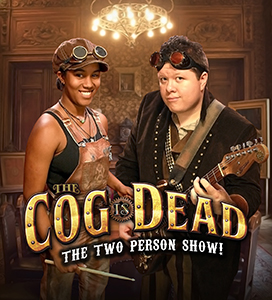

Shelley Adina
RITA Award® winning author and Christy finalist Shelley Adina wrote her first novel when she was 13. It was rejected by the literary publisher to whom she sent it, but he did say she knew how to tell a story. That was enough to keep her going through the rest of her adolescence, a career, a move to another country, a B.A. in Literature, an M.F.A. in Writing Popular Fiction, and countless manuscript pages. She is the author of more than 30 novels and now teaches in the M.F.A. program as adjunct faculty. Shelley is a world traveler who loves to imagine what might have been. Between books, she loves playing the piano and Celtic harp, making period costumes, and spoiling her flock of rescued chickens.
Elizabeth Bear
Elizabeth Bear was born on the same day as Frodo and Bilbo Baggins, but in a different year.When coupled with a childhood tendency to read the dictionary for fun, this led her inevitably to penury, intransigence, and the writing of speculative fiction. She is the Hugo, Sturgeon, Locus, and Campbell Award winning author of 27 novels (The most recent is Karen Memory, a Weird West adventure from Tor) and over a hundred short stories. Her dog lives in Massachusetts; her partner, writer Scott Lynch, lives in Wisconsin. She spends a lot of time on planes.
The Cog Is Dead
Prepare for adventure with these time traveling makers of music! The Cog is Dead are an energetic and eclectic group whose upbeat tunes and catchy melodies come in a variety of musical genres. With songs ranging from dark, Danny Elfman-esque numbers to cheerful and whimsical ditties, they’ve been described as an exciting musical roller-coaster ride, and have been praised for their musical versatility, clever story-telling lyrics, and charming theatrical presence. They’ve been seen touring all over the country from Dragon Con in Atlanta to SteamStock in San Francisco, and everywhere in between spreading their music wherever they go. Along the way they’ve been inspired by the music of all the era’s they’ve been to. So get ready for an exciting musical experience with The Cog is Dead! Their songs are sure to get your toes tapping, put a smile on your face and light a flame in your heart.
Milton Davis
Milton Davis is a research and development chemist, speculative fiction writer and owner of MVmedia, LLC, a micro publishing company specializing in Science Fiction, Fantasy and Sword and Soul. MVmedia’s mission is to provide speculative fiction books that represent people of color in a positive manner. Milton is the author of Changa’s Safari Volumes One, Two and Three. His most recent releases are Woman of the Woods and Amber and the Hidden City. He is co-editor of four anthologies; Griots: A Sword and Soul Anthology and Griot: Sisters of the Spear, with Charles R. Saunders; The Ki Khanga Anthology with Balogun Ojetade and the Steamfunk! Anthology, also with Balogun Ojetade. Milton Davis and Balogun Ojetade recently received the Best Screenplay Award for 2014 from the Urban Action Showcase for their African martial arts script, Ngolo. His current projects include The City, a cyberfunk anthology, Dark Universe, a space opera anthology based on a galactic empire ruled by people of African American descent, and From Here to Timbuktu, a steamfunk novel.
Milton resides in Metro Atlanta with his wife Vickie and his children Brandon and Alana.
Delilah S. Dawson
Delilah S. Dawson is the author of Servants of the Storm, Hit, and the Steampunk Fantasy Blud series, including Wicked as They Come, Wicked After Midnight, Wicked Ever After, and Wicked as She Wants, winner of the Steampunk Book of the Year and May Seal of Excellence for 2013 from RT Book Reviews. She’s also the author of several e-novellas and comics, as well as The Lumberfox and The Superfox as Ava Lovelace and Wake of Vultures as Lila Bowen. She’s into horses, books, geekery, and cupcakes and lives in the mountains of Georgia with her family. Find her online at www.whimsydark.com.
Frenchy and the Punk
New York based International Recording Artists Frenchy and the Punk’s show is a carnival of two that will take you from the Moulin Rouge to CBGBs and back again. A rollicking flapper folk punk steampunk cabaret replete with not only guitar and vocal based songs but also Taiko meets Rio de Janeiro pounding drum instrumentals. A French-born singer/percussionist and American guitarist whose start was in the golden days of the hardcore punk scene, collaborated in 2005 to form this melodic, cheeky and energetic duo.
Imagine Siouxsie Sioux and Dee Dee Ramone had a duo that was inspired by Django Reinhardt, Edith Piaf, Toulouse Lautrec and Deepak Chopra, this is what it might sound like. One part Dresden Dolls, Sonny and Cher and one part White Stripes. A pixie spirited flexitarian band of tree hugging, gothic, folky, Steam Punks by way of Paris and New York. Doused in red wine, kale and granola, raised on punk rock and ballet, eclectic and uplifting…fun with a capital F!
This dynamic duo has been a featured performer at Alternative and Steampunk events in the U.S. and overseas including Steampunk Asylum in Lincoln, UK, DragonCon in Atlanta GA, Steampunk World’s Fair in New Jersey, Edinburgh Fringe Festival in Scotland, Wild Wild West Con in Arizona, Clockwork Alchemy in California, SteamTour in Paris, France and many more. Visit www.frenchyandthepunk.com
Jaymee Goh
 Jaymee Goh is a steampunk postcolonialist, hailing from the Nusantaran country Malaysia and currently residing in North America as a PhD Candidate at the University of California, Riverside. Her creative works have appeared in Expanded Horizons, Stone Telling, and Crossed Genres, and lately in Steampunk World. She is an editor of The Sea is Ours: Tales of Steampunk Southeast Asia (forthcoming Fall 2015, Rosarium Publishing). She has written on racialized and postcolonial steampunk for the WisCon Chronicles (Aqueduct Press, 2011 & 2012), co-written an essay on steampunk fashion and race for Fashion Talks (SUNY Press, 2012), and contributed to Tor.com, Racialicious.com, the Apex Book Company Blog, Beyond Victoriana.com, and Steampunk III: Revolution (Tachyon Publications, 2012). She writes about anti-racism, non-Eurocentric steampunk and postcolonialism at her blog Silver Goggles.
Jaymee Goh is a steampunk postcolonialist, hailing from the Nusantaran country Malaysia and currently residing in North America as a PhD Candidate at the University of California, Riverside. Her creative works have appeared in Expanded Horizons, Stone Telling, and Crossed Genres, and lately in Steampunk World. She is an editor of The Sea is Ours: Tales of Steampunk Southeast Asia (forthcoming Fall 2015, Rosarium Publishing). She has written on racialized and postcolonial steampunk for the WisCon Chronicles (Aqueduct Press, 2011 & 2012), co-written an essay on steampunk fashion and race for Fashion Talks (SUNY Press, 2012), and contributed to Tor.com, Racialicious.com, the Apex Book Company Blog, Beyond Victoriana.com, and Steampunk III: Revolution (Tachyon Publications, 2012). She writes about anti-racism, non-Eurocentric steampunk and postcolonialism at her blog Silver Goggles.
Kevin Hearne
 Kevin Hearne is the author of the Iron Druid Chronicles and the forthcoming Seven Kennings trilogy. He escaped Arizona last year and now lives happily ever after in Colorado with his family and doggies. He digs comics, hugs trees, and knows how to make some pretty great microwave nachos.
Kevin Hearne is the author of the Iron Druid Chronicles and the forthcoming Seven Kennings trilogy. He escaped Arizona last year and now lives happily ever after in Colorado with his family and doggies. He digs comics, hugs trees, and knows how to make some pretty great microwave nachos.
Shoshanah Holl
 Shoshanah Holl is a writer first published in 2013, and illustrator who’s worked on everything from boardgames to Christmas stories. She first discovered steampunk through the work of H.G Wells at a young age, around the same time her crippling fear of Morlocks was born.
Shoshanah Holl is a writer first published in 2013, and illustrator who’s worked on everything from boardgames to Christmas stories. She first discovered steampunk through the work of H.G Wells at a young age, around the same time her crippling fear of Morlocks was born.
Jane Irwin
Hi! I’m Jane Irwin, and I make comics. So far I’ve created the two Vögelein graphic novels, and recently Kickstarted my third book, Clockwork Game, a retelling of the true story of the world’s first chess-playing automaton..
I currently live in Kalamazoo, MI, where I work full-time as a web developer, drawing comics whenever I can. I’m also lucky enough to be married to the incredibly talented Paul Sizer (B.P.M, Moped Army, Little White Mouse).
Emmy Jackson
Emmy Jackson is a Detroit-based author who is two books into a post-apocalyptic urban fantasy series called Empty Cradle. He has been a freelance automotive writer for fourteen years, a fiction writer for thirty, and has a broad range of experience and expertise with which to contribute to panel discussions.
Emmy drove a school bus for six years, has an encyclopedic knowledge of cars (useful when dealing with technical issues in post-apoc and steampunk stories), and has some experience in aerial acrobatics, improvisational dance, gaming, travel…lots of random things.
Emmy spent three years living full-time in a motorhome as a nomad and is best pigeonholed as an occasionally cross-dressing post-apocalyptic gothic dieselpunk with distinct steampunk and maker tendencies.
Scott Lynch
Scott Lynch is the author of four novels in the Gentleman Bastard sequence. The Lies of Locke Lamora (2007) was a World Fantasy, British Fantasy, Crawford, Compton Crook, and Locus first novel finalist; its sequels are Red Seas Under Red Skies (2007), the New York Times best-selling The Republic of Thieves (2013), and the forthcoming The Thorn of Emberlain. His short fiction has appeared in Popular Science, Swords and Dark Magic, Tales of the Far West, Fearsome Journeys, and Rogues. He was a Campbell Best New Writer finalist for 2006 and 2007, and won the British Fantasy Award for best newcomer in 2008. He currently lives in Wisconsin, where he has been a volunteer firefighter since 2005. He shares a commuting relationship with his Massachusetts-based partner, author Elizabeth Bear.
David Malki
David Malki ! is the author of the comic Wondermark (wondermark.com), a gag strip crafted entirely from 19th century illustrations. Wondermark was syndicated in The Onion, and has three hardcover collections from Dark Horse Books, the first of which was nominated for the Eisner award (the highest honor in comics) for ‘Best Humor Publication.’ It’s possible that this was a clerical error. He’s also co-editor of the bestselling Machine of Death series of fiction anthologies, and most recently, creator of the morbid storytelling game Machine of Death: The Game of Creative Assassination (machineofdeath.net). In his spare time, he uses dice to generate fantastic creatures and draws their portraits at rollasketch.com. He lives in Los Angeles with his wife Nikki, and he likes to fly airplanes.
Lisa Mantchev
 Lisa Mantchev is the author of young adult steampunk novel TICKER, a Kindle #1 Bestseller now available through Skyscape. She is also the author of the Théâtre Illuminata series, beginning with EYES LIKE STARS, which was nominated for a Mythopoeic Award and the Andre Norton Award. Her near-future YA collaboration SUGAR SKULL and picture books STRICTLY NO ELEPHANTS and SISTER DAY! are forthcoming. She lives on the Olympic Peninsula of Washington State with her husband, children, and horde of furry animals. Visit her online at www.lisamantchev.com.
Lisa Mantchev is the author of young adult steampunk novel TICKER, a Kindle #1 Bestseller now available through Skyscape. She is also the author of the Théâtre Illuminata series, beginning with EYES LIKE STARS, which was nominated for a Mythopoeic Award and the Andre Norton Award. Her near-future YA collaboration SUGAR SKULL and picture books STRICTLY NO ELEPHANTS and SISTER DAY! are forthcoming. She lives on the Olympic Peninsula of Washington State with her husband, children, and horde of furry animals. Visit her online at www.lisamantchev.com.
Kat Tanaka Okopnik
 Kat Tanaka Okopnik finds it difficult to write short bios for herself, because she’s been deliberately living the sort of life that doesn’t reduce to simple sentences. She has been explaining the ways and worldviews of the mainstream and marginalized to each other for many decades, both because of her position as a visible member of a diasporan community and her inclination toward unusual situations and experiences.
Kat Tanaka Okopnik finds it difficult to write short bios for herself, because she’s been deliberately living the sort of life that doesn’t reduce to simple sentences. She has been explaining the ways and worldviews of the mainstream and marginalized to each other for many decades, both because of her position as a visible member of a diasporan community and her inclination toward unusual situations and experiences.
She writes and speaks on social justice issues, geek culture, food, parenting, and stepping outside the narrow confines of expectation at her blog, http://ShadesBetween.com/.
Her ongoing projects include the Dictionary of Social Justice, Mx. Mannerly’s Etiquette for a Changing World, and a growing stack of short stories awaiting completion. She is available for cultural competency consulting and editing at http://www.ktokopnik.com/.
Paul Sizer
Striving to create industrial strength graphic design for the masses since 1992, Paul Sizer has worked to find the common ground between his two loves; comic art and graphic design. Paul has self published three graphic novels under his own Café Digital imprint and works with eclectic clients all over the world, including collaborating with 80’s synthpop star Thomas Dolby on Dolby’s most recent album, “A Map of the Floating City” and designing the dieselpunk-inspired Floating City online game connected with the album. Sizer has also found fans around the world for his retro-styled propaganda posters, including his popular “Science Builds The Future” series.
Paul works and lives in Kalamazoo, Michigan with his wife, fellow comic creator Jane Irwin. You can see all of Paul’s current work at www.paulsizer.com
Chuck Wendig
Chuck Wendig is a novelist, screenwriter and game designer. He’s the author of many published novels, including but not limited to: Blackbirds, Atlanta Burns, Zer0es, and the YA Heartland series. He is co-writer of the short film Pandemic and the Emmy-nominated digital narrative Collapsus. Wendig has contributed over two million words to the game industry. He is also well known for his profane-yet-practical advice to writers, which he dispenses at his blog, terribleminds.com, and through several popular e-books, including The Kick-Ass Writer, published by Writers Digest. He currently lives in the forests of Pennsyltucky with wife, tiny human, and red dog.
Brenna Yovanoff
Brenna Yovanoff was raised in a barn, a tent, and a tepee, and was homeschooled until high school. She spent her formative years in Arkansas, in a town heavily populated by snakes, where sometimes they would drop turkeys out of the sky. When she was five, she moved to Colorado, where it snows on a regular basis but never snows turkeys. She holds an MFA in fiction from Colorado State University and is the author of NYT Bestseller THE REPLACEMENT, THE SPACE BETWEEN, PAPER VALENTINE, and FIENDISH. She currently lives in Denver with her husband. Visit her online at www.brennayovanoff.com.